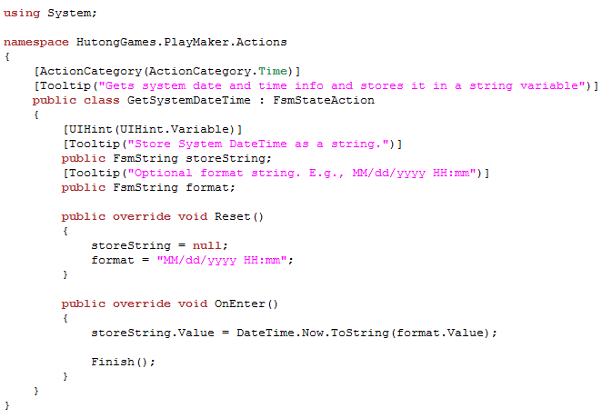

A simple action written in C# that gets the System DateTime and stores it in a string variable:

This action should be fairly self explanatory, but here's a quick overview:
Attributes
You can mark up actions with Attributes like ActionCategory, Tooltip, and UIHint. See Action Attributes.
[ActionCategory(ActionCategory.Time)]
Says this action should appear in the Time category in the Action Browser.
Note, you can use a built-in category in the ActionCategory enum, or use a string to define a custom category.
Used on classes and public fields to show descriptions and rollover tooltips in the Playmaker editor.
[UIHint(UIHint.Variable)]
UIHint.Variable gives the user a variable dropdown allowing them to select a variable.
Reset
All actions should initialize public variables to useful default values.
Reset is called when the action is added to a state and when the user selects Reset from the Action Editor Settings Menu.
OnEnter
OnEnter is called when the state becomes active. Many simple actions do all their work in OnEnter.
storeString.Value = DateTime.Now.ToString(format.Value);
This statement is the heart of this simple action, storing DateTime as a string using the supplied format.
Note the use of the Value property to get at the FsmString's wrapped string value.
If an action can finish, it should call Finish() when it finishes.
When all actions on a state have finished, the system sends a FINISHED event that can be used to transition to a new state.